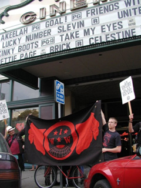

Submitted on Thu, 05/18/2006 - 1:41pm
 New York, NY- Industrial Workers of the World members and supporters entered Starbucks cafes today in cities across the United States, Canada, and the British Isles to inform workers about their right to form a union. The union members highlighted gains in wages, security of hours, and respect on the job won by baristas who have already joined the IWW. The Day of Action commemorates the second anniversary of the founding of the IWW Starbucks Workers Union on May 17, 2004. Since 2004, baristas have improved their life at work through direct action on the job and in the community despite an illegal anti-union campaign waged by Starbucks and its Chairman Howard Schultz.
New York, NY- Industrial Workers of the World members and supporters entered Starbucks cafes today in cities across the United States, Canada, and the British Isles to inform workers about their right to form a union. The union members highlighted gains in wages, security of hours, and respect on the job won by baristas who have already joined the IWW. The Day of Action commemorates the second anniversary of the founding of the IWW Starbucks Workers Union on May 17, 2004. Since 2004, baristas have improved their life at work through direct action on the job and in the community despite an illegal anti-union campaign waged by Starbucks and its Chairman Howard Schultz.
“Our message for our co-workers is simple: the IWW Starbucks Workers Union is here to help,” said Suley Ayala, a Starbucks barista and IWW member in New York City. “Employees don't have to go through the indignities of working at Starbucks alone anymore-together we'll continue our march toward a living wage, guaranteed work hours, and most importantly, respect.”
Submitted on Wed, 05/17/2006 - 12:32pm
By Erin Thompson - reposted from the Indypendent, May 10, 2006.
 A smell of wet garbage emanated from a paste of rotten fruit, cucumbers and smashed olives that clung to the sidewalk in front of Amersino Marketing Group, an anonymous building amid a row of squat warehouses in Ridgewood, Queens. Like most mornings, on Monday May 1, Eliezer Maca arrived at 5:30 a.m. at the warehouse, where he spends six days a week loading trucks ferrying supplies to New York’s Chinese restaurant industry.
A smell of wet garbage emanated from a paste of rotten fruit, cucumbers and smashed olives that clung to the sidewalk in front of Amersino Marketing Group, an anonymous building amid a row of squat warehouses in Ridgewood, Queens. Like most mornings, on Monday May 1, Eliezer Maca arrived at 5:30 a.m. at the warehouse, where he spends six days a week loading trucks ferrying supplies to New York’s Chinese restaurant industry.
Today, however, Maca was not here to work.
Having been fired on April 29 by the owner, he was flanked by a handful of youthful, scarletemblazoned members of the Industrial Workers of the World (IWW) and a dozen coworkers, forming an enthusiastic picket line. It was the fifth such picket at the company in as many weeks, as workers took to heart the direct action and worker-lead strikes characteristic of the IWW.
Submitted on Sat, 05/13/2006 - 3:15am
By Dean Dempsey, special to iww.org - May 12, 2006
Landmark Shattuck Cinema workers are fed up. Years of bad hours, poor pay, a hostile work environment and the demoralizing treatment from theater management has led the Cinema workers of Berkeley, CA, to push for a union; for the One Big Union of the Industrial Workers of the World.
At 4pm on May 12, 2006, approximately 80 Wobblies and supporters gathered in what some hailed as one of the largest IWW gatherings in recent Bay Area history, next to the May Day contingent earlier this month. Theater workers, union organizers and locals from the community attended the rally to demonstrate their solidarity for the union effort, carrying signs that read “An injury to one is an injury to all”, and “Union Now”. A drum team kept the crowd enthused, as they sang union songs and recited pro-worker chants to the public. Some Cinema employees were still on the clock, but were very much committed to participate in the rally while on their breaks, wearing their IWW pins and showing support for the union. Shattuck Cinema organizer, Harjit Gill, says “I think what we see here today is a great success. There has been the participation of IWW members from the past and the present, and those who haven’t been recently active. Ultimately, we’re very excited about this campaign.”
Submitted on Fri, 05/12/2006 - 9:54pm
By Dean Dempsey - Industrial Worker, June 2006
 International Workers Day, 2006, was undoubtedly one of the largest May Day celebrations in U.S. history, as upward of 1.5 million people participated in day long walk-outs, strikes, and protests all across the nation. Chicago estimated 700,000 took part in their May Day action, with one-third of the city’s students refusing to attend school. Denver received at least 75,000 people, or one-sixth of the city’s population, in a rally outside the state capitol. Los Angles organizers say about one in every four of students were absent as more than one-million people who took part in May Day marches and boycotts.
International Workers Day, 2006, was undoubtedly one of the largest May Day celebrations in U.S. history, as upward of 1.5 million people participated in day long walk-outs, strikes, and protests all across the nation. Chicago estimated 700,000 took part in their May Day action, with one-third of the city’s students refusing to attend school. Denver received at least 75,000 people, or one-sixth of the city’s population, in a rally outside the state capitol. Los Angles organizers say about one in every four of students were absent as more than one-million people who took part in May Day marches and boycotts.
Submitted on Mon, 05/08/2006 - 2:25pm
Note: This is an official Pittsburgh GMB posting. The Branch only authorizes officially recognized news and articles to be posted under the Pittsburgh GMB banner.
Homestead, PA, -- More than one hundred members of the Industrial Workers of the World, friends of Labor, local activists, and community members celebrated International Workers’ Day in Pittsburgh, PA. The Pittsburgh IWW’s second annual celebration of workers worldwide was held on April 29th at the Bulgarian-Macedonian National Education and Cultural Center and included a midnight march to the historic Homestead Strikers’ Monument.
Members of the Pittsburgh IWW, which was also celebrating the fourth anniversary of its chartering on May Day 2002, coordinated the evening’s events which included various musical acts, labor skits, poetry and spoken word performances, and speak outs by local union members and activists. In addition to the IWW, members belonging of the Teamsters, Steelworkers, and Writers Guild were present, as were representatives of local activist groups such as the Thomas Merton Center, the anti-war Pittsburgh Organizing Group, Pittsburgh Friends of Immigrants, and the Big Idea Bookstore. Members of the of the Pittsburgh Anti-Sweatshop Community Alliance, including IWW member and PASCA co-founder Ken Miller, were also on hand and spoke of this summer’s activities around the 2006 All-Star Game to raise awareness of major league baseball’s connection to global apparel sweatshops.